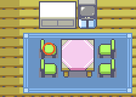

PokémonEMMA'S EMERALD
OFFICIAL Strategy Guide
Home: MOM's Second Battle (5 badges)
TIP
No wild Pokémon in the grass here. Time of day: M = morning (6–10), D = day (10–19), E = evening (19–20), N = night (20–6).
Event 1: Go home: MOM's second battle

Littleroot is two routes south of Petalburg, so with the Balance Badge in hand drop in on MOM. Five badges unlock her second team: Swablu, Brionne, Jigglypuff and HUBERT. Five Big Malasadas for the win, and a full heal before and after.

CAUTION
Brionne's Disarming Voice and Jigglypuff's Sing are the annoyances. Steel or Poison moves shut the fairies down; keep a Chesto Berry or Awakening handy.Battle
| Pokéfan MOM Normal  Swablu LV33 Normal  Brionne LV34 Water  Jigglypuff LV36  HUBERT the Lillipup LV37 Normal Hard Swablu LV34 Normal Eviolite Brionne LV35 Water Sitrus Berry Jigglypuff LV37 Eviolite HUBERT the Lillipup LV38 Normal Eviolite Easy Swablu LV30 Normal Brionne LV31 Water Jigglypuff LV33 HUBERT the Lillipup LV34 Normal |
40